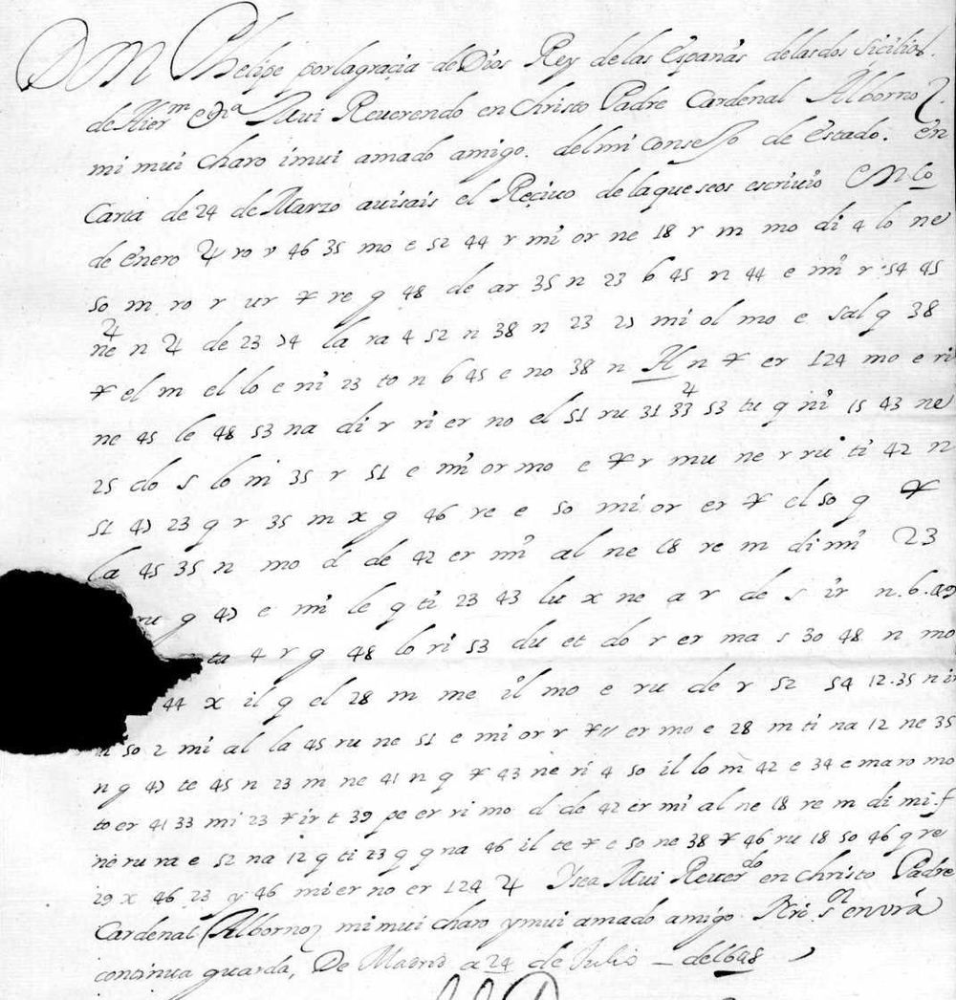

At a glanceKey from external plaintext · complete · 353 of 359 groups
- The letter
- Philip IV to Cardinal Gil de Albornoz, his ambassador to the Pope, Madrid, 24 July 1648, countersigned by the secretary Pedro Coloma. Two copies of the same letter, the body in cipher, the opening and closing formulas in clear; no decipherment was filed with them.
- Where
- Archivo Histórico de la Nobleza (Toledo), Osuna papers, OSUNA,CT.2,D.32(1-2): copy A on images 2–3, copy B on image 5 (PARES 3939398). Catalogue no. 747 here, which lists 69 shelfmarks of Albornoz’s embassy papers; four are digitised.
- The cipher
- A syllabic cipher. A syllable is written as another syllable with the consonant changed and the vowel kept (mo = co, ne = de, ra = sa), numbers in series of five give more syllables (45–49 = ra re ri ro ru), and a few signs stand for words (a cross for que, sal for Su Santidad).
- How the key was found
- Brice Dudout found the same cipher in a chapter of a letter of Luis de Haro, 25 September 1649, enciphered for Albornoz, whose plain copy was kept (OSUNA,CT.11,D.1). He built the key on its first twelve lines, froze it and tested it on the other eleven: 0.859 of their letters, against 0.476 at the 99th percentile of keys with shuffled values. The royal cipher of 1644–45, rebuilt from two other letters of the fonds, does not fit this letter.
- What it says
- The King insists that Albornoz obtain from Innocent X that the nuncio at Madrid, Giulio Rospigliosi, Archbishop of Tarsus and later Pope Clement IX, keep his post: “no puede haver instrumento más a propósito”, and the ambassador is not to give up “por ningún caso”.
- Still open
- Six of 359 groups: four code signs found only in this letter (74, an underlined A, 124 twice, a cross with 11) and one group before respondió. About five more are probable readings.
- Credit
- Brice Dudout (Europe chiffrée), working with Claude Opus 5.5: the inventory of no. 747, both keys and their held-out tests, the transcription of both copies, the Spanish text and the English translation. His write-up. The plain copies made at the time and filed with the 1649 chapter and the 1644–45 letters supplied the keys.
01 The letter
In 1648 Innocent X was renewing his nuncios. Philip IV wanted to keep his own at Madrid: Giulio Rospigliosi (1600–1669), titular Archbishop of Tarsus, nuncio in Spain since 1644. A royal letter of 10 January 1648 (OSUNA,C.1983,D.7, not digitised) had asked Cardinal Gil de Albornoz, the King’s ambassador to the Pope, to obtain that “the Archbishop of Tarsus, nuncio of Spain, continue his residence”. Albornoz answered on 24 March with what the Pope had said. This letter of 24 July is the King’s reply: the opening that acknowledges the March letter is in clear, the body in cipher, and the closing formulas, the date, Yo el Rey and the countersignature of Pedro Coloma are in clear again.
The letter survives twice in the Osuna papers of the Archivo Histórico de la Nobleza: copy A on images 2–3 of the PARES record, copy B on image 5, the original and the duplicate, both in the same chancery hand. Copy A repeats half a line and cancels it with 4s written above it; copy B cancels one group inside sujeto. Otherwise the two copies agree group for group, apart from a few copying slips. No decipherment, interlinear or separate, was filed with either.
The Albornoz embassy papers passed, with the cardinal’s successor in Rome, into the archive of the Dukes of the Infantado and then into that of the Dukes of Osuna. Catalogue no. 747 here lists 69 of their shelfmarks with cipher; only four are digitised on PARES, and the other three hold the plain copies from which the keys were rebuilt and tested.

02 The cipher
The cipher is built on syllables. Most of the groups look like Spanish syllables or small numbers, and almost none of them means what it looks like:
| kind | how it works | examples |
|---|---|---|
| syllables | consonant changed, vowel kept | mo = co, ne = de, ri = si, la = pa, ti = mi, ro = so, so = ta, de = ve, ru = su |
| vowel + consonant | n written r, l written t | er = en, or = on, ar = an, et = el; also el = es, il = is, al = as |
| numbers | series of five, one per vowel | 25–29 fa fe fi fo fu, 30–34 ga…gu, 35–39 la le li lo lu, 40–44 ña ne ni no nu, 45–49 ra…ru, 50–54 ta te ti to tu |
| single letters | letters and small numbers | 2 = n, e = n, n = s, m = r, r = a, 23 = o, 6 = t, 12 = d, 18 = l, x = e, g = y (also p), 4 = s or a comma |
| words | signs | a cross ✗ = que, sal = Su Santidad; in the 1649 chapter also gus = guerra, ile = Armada |
From Brice Dudout’s key K2 and its additions (targets/albornoz1648/key_K2.tsv, key_K2b_additions.tsv).
So ne ri 4 so il is de si s ta is, “desistáis”, and lo m 42 e 34 e ma ro is po r ni n gu n ca so, “por ningún caso”. The royal letters of 1644–45 in the same fonds use a cipher of the same kind with other values: numbered syllables in series of five (30–34 = ma me mi mo mu), letters for letters (a = c, c = n, f = r) and syllables written vowel first (ac = la, ap = sa). The 1648 letter is not in it.
03 How the key was found
The digitised pieces. Of the 69 shelfmarks of no. 747, four have images on PARES: CT.2,D.16 (Philip IV to Albornoz, 12 December 1644), CT.2,D.20 (26 January 1645), CT.2,D.32 (this letter) and CT.11,D.1 (1649). Brice Dudout wrote a protocol before computing anything: each key built on one text, frozen with a SHA-256 hash, and tested on text kept out of the work.
A key that does not fit. D.16 keeps its cipher original (images 2–4) and a plain copy made at the time (images 6–8). Aligning them gave K1, the royal cipher of 1644–45, which was frozen and tested on D.20, transcribed before its plain copy was opened: K1 recovered 0.638 of D.20’s letters, against a median of 0.467 and a 99th percentile of 0.550 for 200 control keys with the values permuted. Applied to the 1648 letter, K1 gives nothing: the letter is made of syllable groups (ne, mo, ma, so, ri) and numbers from 2 to 61 that K1 does not have.
The key from the 1649 chapter. CT.11,D.1 holds a chapter of a letter of Luis de Haro to the Count of Peñaranda, Madrid, 25 September 1649, on the army of Catalonia, enciphered “to send to Cardinal Albornoz” (image 3), with its plain copy (image 1). It is in the cipher of the 1648 letter. The words dentro de Cataluña y, enciphered twice in the same way, 2 ℓ48 ne ma so 39 40 g, opened the alignment. The key K2 was learnt on lines 1–12 only and frozen. Lines 13–23, decoded mechanically with the frozen key, recover 0.859 of the letters of the plain copy, against a median of 0.419 and a 99th percentile of 0.476 for 200 control keys with the values permuted. The protocol had named a word-level score; the test used a letter-level one (the longest common subsequence of normalised letters), because a mechanical syllabic decoding does not divide words reliably. Both tests clear their controls by a wide margin.
The letter. Both copies of the 1648 letter were transcribed and decoded with K2. K2 left some single letters and series numbers without a value; 29 values were added on the letter (K2b), each attested at least twice, fitting its series of five, or confirmed by the other copy: e = n, r = a, 23 = o, the cross = que, 25 = fa, 54 = tu. Copy B, the cleaner, was then checked group by group against copy A, and copy A was followed where B departs from the key.
The statistical check here. The project’s validator (docs/_validate.py) scores the reading of 636 groups (84 types) with a four-gram model of Golden Age Spanish, as mean log-probability per letter. The reading scores −2.038; random keys of the same shape −3.743 on average; a key annealed onto the shuffled ciphertext −2.535 at best; and the same annealer, started from random keys on the real text, reaches −2.246. Verdict: pass.
04 The decipherment
Brice Dudout’s text: spelling of the letter kept, punctuation and accents added. {x} probable reading; ‹…› unresolved group; [x] restored from the sense. The opening and the closing, in clear in the letter, are left out.
[…] so{b}re la continuación del arçobispo de Tarso, aunque se provean las otras nunciaturas. Ve{o} ‹74› [que] pasastis los oficios con Su Santidad, y lo que ‹el› respondió mostrando los ‹A›s que en ‹124› considera;
[…] about the continuance of the Archbishop of Tarsus, even if the other nunciatures are filled. I see ‹…› [that] you made representations to His Holiness, and what he answered, showing the ‹…› that he considers in ‹…›;
pero todavía, siendo este sujeto muy digno de favor por la atención con que acude a su ministerio y a la representación en que está, y que para las conveniencias del servicio [de] su príncipe y mío no puede haver instrumento más a propósito, buelvo a encargaros continuéis y esforcéis con Su {Be}atitud las instancias para su detención ‹✗11› en conformidad de las primeras órdenes, y que no desistáis por ningún caso, como en negocio que incluye en sí conveniencias del servicio de Su Santidad y mío;
but nevertheless, this person being most worthy of favour for the care with which he attends to his ministry and to the representation he holds, and since for the interests of the service of his prince and mine there can be no instrument more suitable, I again charge you to continue and redouble with His Beatitude the requests for his retention ‹…›, in accordance with the first orders, and not to desist in any case, as in a business that contains interests of the service of His Holiness and mine;
y daréisme quenta de lo que resultare y se fuere ofreciendo en ‹124›.
and you will report to me what results and whatever may arise in ‹…›.
“His prince and mine”: the nuncio served two masters, the Pope whom he represented and the King at whose court he lived, and the King argues that keeping him serves both. Rospigliosi did stay at Madrid until 1653. He later became Cardinal Secretary of State and, in 1667, Pope Clement IX. Albornoz was given leave to return to Spain in 1649 and died in December of that year.
05 What remains uncertain
Copy B has 359 cipher groups. 353 have a value (98.3%), about five of them probable readings; six are unresolved. By the project’s grades, the values of K2 rest on a known-plaintext letter (C), the K2b additions and the probable readings are M, and the two words restored from the sense are I.
- 74, in “Ve{o} ‹74› pasastis”: a code sign, probably que.
- An underlined A, in “mostrando los ‹A›s”: a code sign for a plural noun, perhaps inconvenientes.
- 124, twice: “que en ‹124› considera” and “se fuere ofreciendo en ‹124›”.
- A cross with 11, ✗11, in “su detención ‹✗11› en conformidad”.
- The group before respondió: copy B has el (es), copy A ol (os); the sense wants él.
- Probable readings: the b of sobre is written with the sign for a; the “Be” of Beatitud with the syllable vo; the o of Veo.
The four code signs occur only here, and the 1649 chapter does not use them. Another letter in the same cipher would settle them; none of the other digitised pieces of no. 747 is in it, and the remaining 65 shelfmarks have no images.
No earlier decipherment was found. The PARES record gives only the subject (“para que continúe en sus funciones el Nuncio”); X. Arriazu García’s thesis on Albornoz’s mission (Barcelona, 2024) cites other cipher letters of the Osuna fonds, not this one; a web search on 27–28 October 2026 found nothing.
06 Sources
- Archivo Histórico de la Nobleza (Toledo), OSUNA,CT.2,D.32(1-2), Philip IV to Cardinal Albornoz, 24 July 1648: PARES record 3939398, copy A images 2–3, copy B image 5.
- Key K2: OSUNA,CT.11,D.1(1-6), Luis de Haro to the Count of Peñaranda, Madrid, 25 September 1649, plain copy image 1, cipher image 3: PARES record 3939336.
- Key K1, tried: OSUNA,CT.2,D.16, Philip IV to Albornoz, 12 December 1644, cipher images 2–4 and plain copy images 6–8 (PARES 3939415); OSUNA,CT.2,D.20, 26 January 1645, cipher image 2 and plain copy image 4 (PARES 3938842).
- Brice Dudout, Europe chiffrée: Philip IV to Cardinal Albornoz, “Do not desist in any case”, Madrid, 24 July 1648 (2026, CC BY 4.0): text, translation and notes.
- X. Arriazu García, doctoral thesis on Cardinal Albornoz’s mission in Rome (Barcelona, 2024), checked by Brice Dudout for this letter.
Folder: targets/albornoz1648/ (notes, the transcription of both copies, the line-by-line decryption, the keys K1, K2 and K2b, the key documents and the held-out texts, the validation pairs, the Spanish text and the English translation, as contributed by Brice Dudout). The text and translation are his, reproduced under CC BY 4.0.